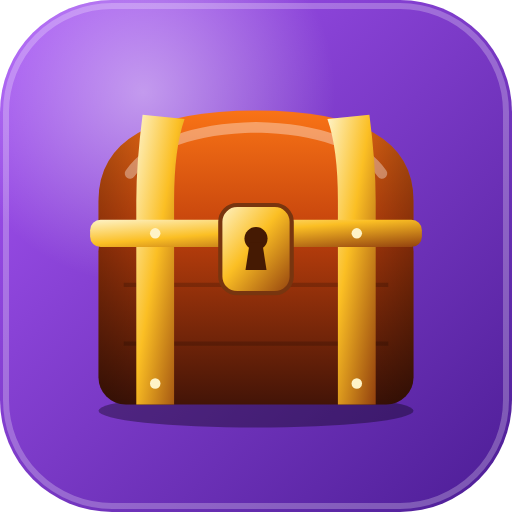

Baúl Nissi
Se instala desde acá, sin bajar archivos.
Funciona en Android, iPhone, Windows y Mac.
⚠️ Abriste esto dentro de otra app (WhatsApp, Instagram o la cámara). Tocá ⋮ o ⋯ y elegí «Abrir en Chrome» (Android) o «Abrir en Safari» (iPhone). Después seguí los pasos.
✅ El Baúl ya está instalado en este aparato
🔓 Abrir el Baúl📲 1 · Instalar
🔐 2 · Crear tus claves
- Abrí el Baúl con el ícono nuevo que quedó en tu pantalla.
- La primera vez te pide crear tu clave: escribila dos veces y tocá Crear y entrar.
- Listo. Tu Baúl empieza vacío y es solo tuyo.
🔒 Tus datos quedan cifrados con tu clave dentro de tu aparato. Nadie más los ve, ni siquiera el servidor. Si olvidás la clave no se puede recuperar: anotala en un lugar seguro.
¿Lo querés en el teléfono? Escaneá con la cámara: